Themed Lands

When visiting Universal Studios, one of the things you cannot miss are the seven themed zones or lands available for you to explore!
USS' seven zones, which are based on themes from family-friendly shows like "Sesame Street" and blockbuster flicks like "Transformers," are guaranteed to please moviegoers. Each zone has its own theme and rides, as well as retail shops and eateries.
The park's layout is circular, making it simple to move between the various zones. However, the trick is to avoid starting with the first zone you see or following the loop's order; instead, make a beeline towards the top rides on your bucket list or the inner zones to avoid lines.
Thrill seekers should head directly to Ancient Egypt's Revenge of the Mummy ride, while families with little children should head to Far Far Away.
Content Page
Hollywood & New York
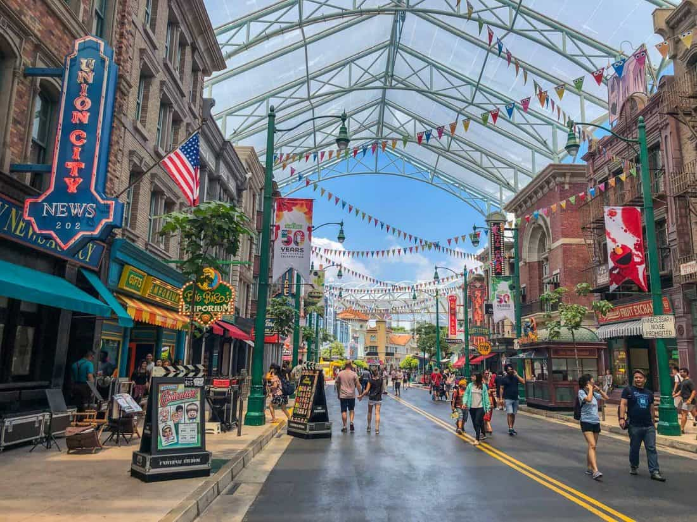
New York and Hollywood are two little zones united, and strolling through them will make you feel like you're on a movie set. These zones, which are decked up in city lights and flanked by prominent monuments and buildings, are the closest you'll get to these gorgeous, bustling streets of America for just less than $100 on your part!
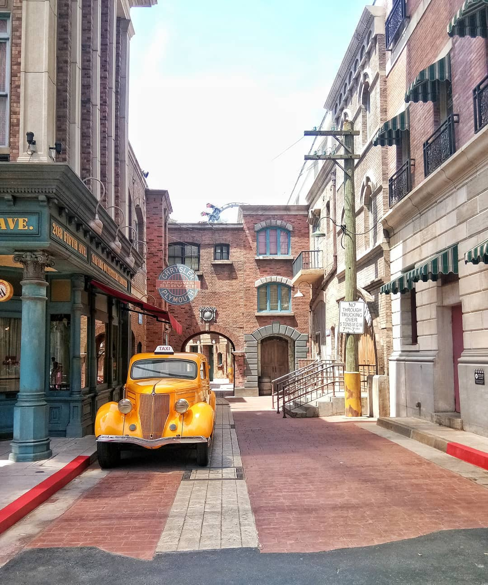
The alleys of New York are also extremely popular spots for pictures. If you are looking to bring your experience home, it is definitely an area you will not regret exploring!
Additionally, you may ride the Sesame Street Spaghetti Space Chase ride here to go on an adventure with your favorite childhood heroes in person. Otherwise, don't miss out on a Steven Speilberg blockbuster sequence with the Lights, Camera, Action! show* to get a sensing of how movies are made!
*Do note that Lights, Camera, Action! will be closed till further notice due to Covid 19 measures.
Eateries & Retail Shops
Mel's Drive-In
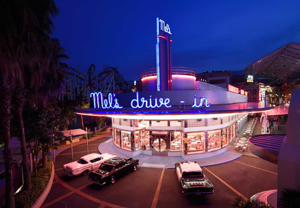Mel's Drive-In is a must try if you are looking to experience what USS offers in terms of food! The drool-worthy charcoal burgers and milkshakes are definitely some things that will enhance your experience. For more information on its prices, click here.
Universal Studios Store
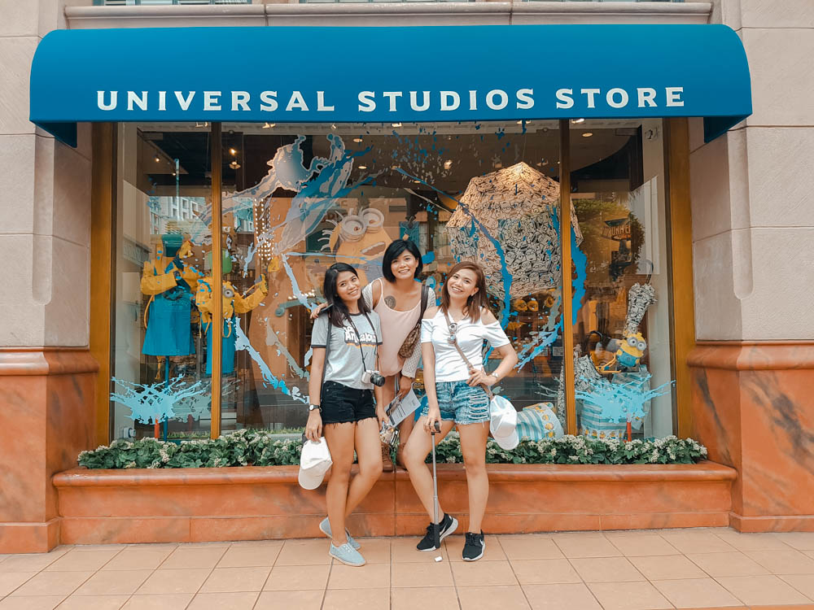Situated near the entrance of the theme park, it is the largest retail shop you can find at USS. This store contains all the merchandise you can possibly find within USS itself! If you are running out of time, instead of rushing about the various stores available in each land, you can just come here to look around!
Sci-Fi City
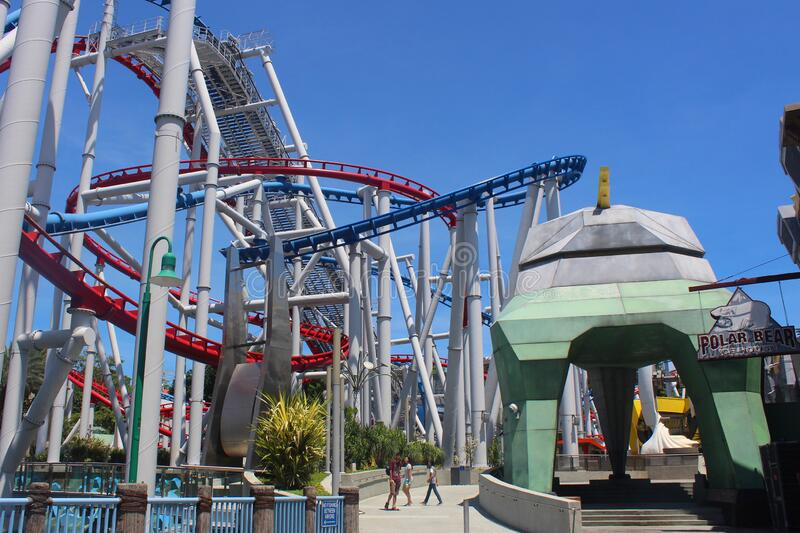
In Sci-Fi City, a futuristic city of technology, you will be able to find the iconic Transformers franchise and the television series Battlestar Galactica that you may be familiar with!
It has two of the most popular rides: To begin with, Battlestar Galactica: Human vs Cylon, as seen in the image above, offers the world's tallest dueling roller coasters to those who dare to take on the task! Note the Human's high fall and Cylon's 360-degree twists, which will send shivers down your spine!
Tip: Being one of the most popular rides in USS, we would like to recommend you to either queue in the morning or the evening as queue timings will be much shorter. Additionally, you will be required to put your belongings in a locker before entering the queue, so do remember to bring some cash with you on the ride as you might have to pay to retrieve your items after exceeding a certain amount of time!
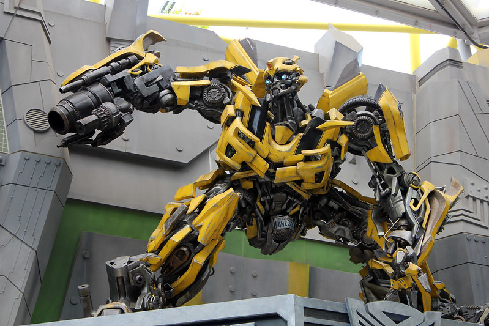
Another popular ride, Transformers The Ride: The Ultimate 3D Battle, may be more suited for those interested in 3D effects and fans of the popular series! Become part of the movie as Autobots go up against the Deceptions!
Eateries & Retail Shops
Starbot Cafe
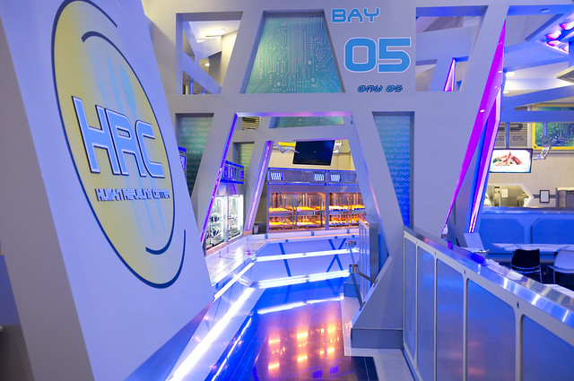Located at the heart of Sci-Fi City, Starbot Cafe is a restaurant sporting a futuristic aesthetic which will impress anyone that enters it! It's iconic 'Human Refueling Center' offers a food purchasing system that will be familiar to Ikea lovers! For more information, click here.
(Go to Top)
Ancient Egypt
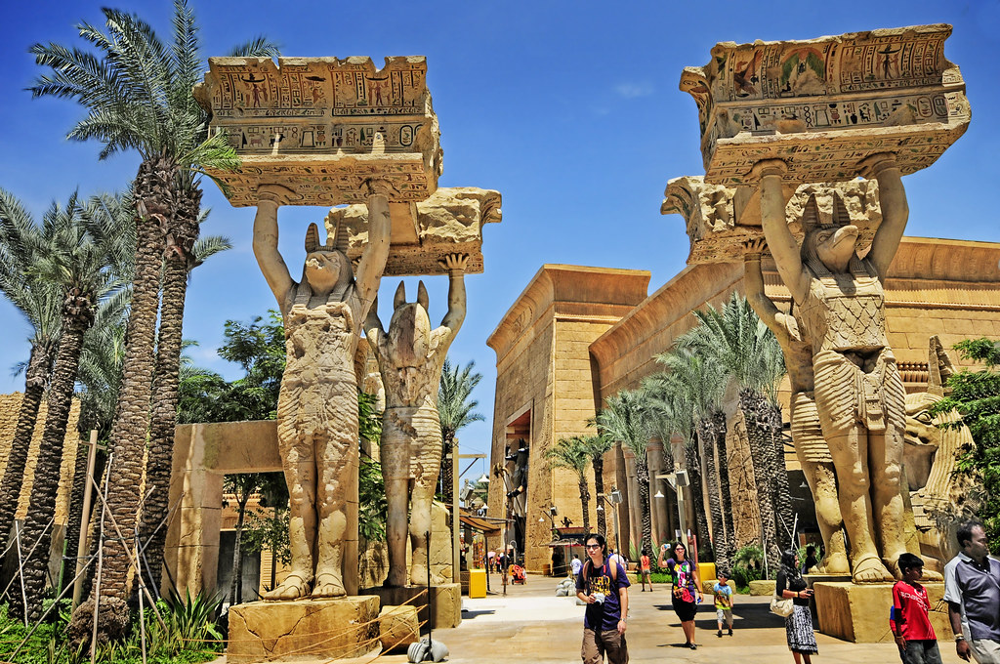
Just beyond Sci-Fi City is the ancient city of Egypt, where you'll find replicas of Egyptian guards dressed up in ornate garb, mummies in tombstones, and olden-day artifacts – pretty much everything you'd expect to see in Egypt.

For an adrenaline thrill, don't miss the Revenge of the Mummy high-speed enclosed roller coaster while you're there. It operates at 70 KM/H with fireballs and frightening mummies, as well as unexpected drops, accelerations, and even backward motions!
Tip: Just like Battlestar Galactica, we would like to recommend you to either queue in the morning or the evening as queue timings will be much shorter. Additionally, you will be required to place your belongings in a locker before entering the queue, so bring some cash with you on the ride as you might have to pay to retrieve your items after exceeding a certain amount of time!
Eateries & Retail Shops
Carter's Curiosities
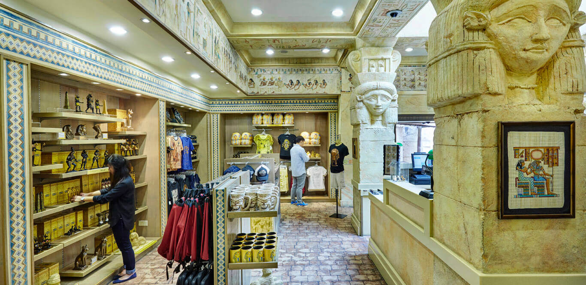Located at the exit of the rollercoaster attraction, this retail shop displays a variety of 'historical artefacts' and 'fossils' of ancient Egypt that come in the forms of jewellery, stationery etc. This is something history fans definitely have to check out!
(Go to Top)
The Lost World
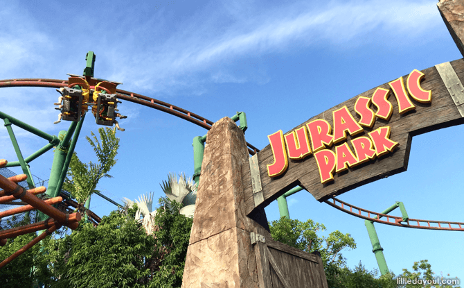
Fans of "Jurassic Park" will recognize The Lost World's iconic colossal doors designed to keep T-Rexes at bay. For the full experience of your favorite "Jurassic Park" movie, look for dinosaur statues and ride themed rides.
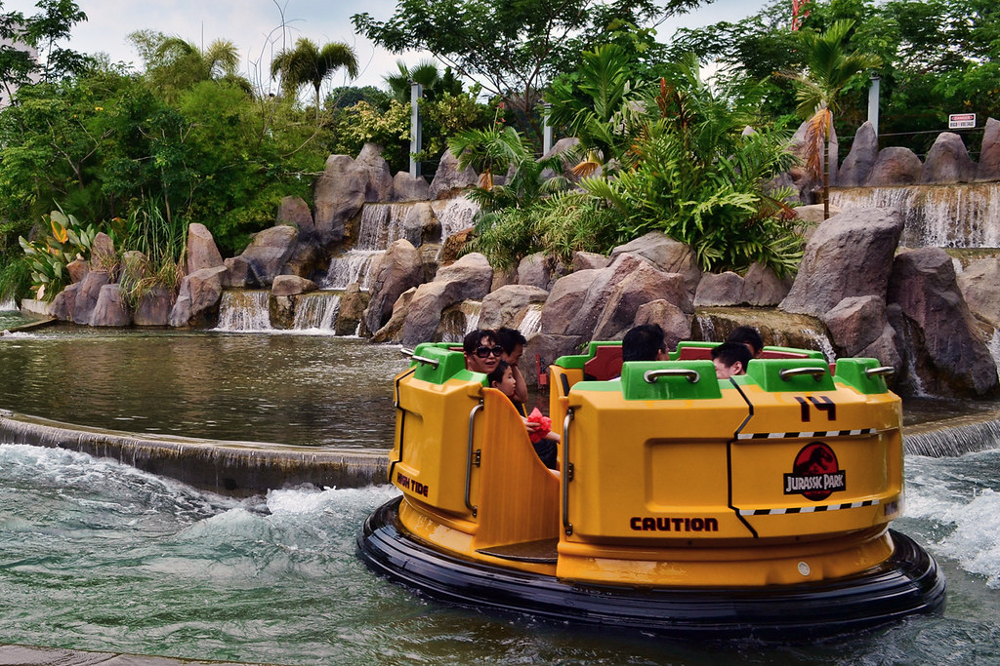
Explore a dense dino-filled jungle on the Jurassic Park Rapids Adventures' water rafts, or soar into the skies on the Canopy Flyer roller coaster for a bird's eye perspective of the entire zone. WaterWorld, an action-packed live water show based on the Hollywood film of the same name, is also available.
Tip: The Rapids will involve water, and there is a possibility that you might get soaked! For those who dislike getting wet, we recommend that you buy your own (disposable/ reusable) raincoats and bring slippers along with you to change into as a cheaper option. Meanwhile, USS also sells disposable raincoats at the attraction for $3 each.
Eateries & Retail Shops
Fossil Fuels
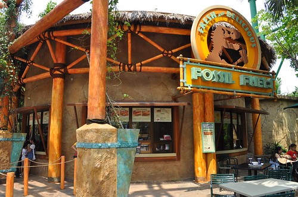Fossil Fuels is a counter-serving restaurant that is perfect if you are just looking for a quick bite or a short rest before continuing on the rest of your journey! If you bought your own USS water bottle, this restaurant also allows for refills of drinks for only $2! For more information, click here.
(Go to Top)
Far Far Away
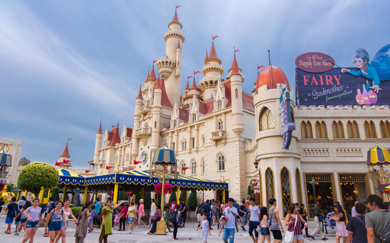
Far Far Away is home to the grand castle from "Shrek" and is arguably the most iconic zone of Universal Studios Singapore. Of course, it's not just for Instagram — it's also where you can see shows like Shrek 4-D Adventure, which uses sensory effects like water jets and movements to bring the story of Shrek, Fiona, and Donkey to life.
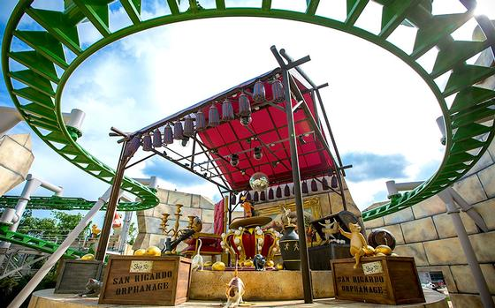
The story-driven Puss In Boots' Giant Journey roller coaster is ideal for individuals who love relaxing rides. Meanwhile, the Enchanted Airways roller coaster will provide you with a bit more thrill in a kid-friendly environment as you ride upon the "back" of a dragon.
Tip: While the Enchanted Airways is targeted at children, do note that the rollercoaster can be quite frightening for beginners or those who are afraid of rollercoasters due to its high speed!
Eateries & Retail Shops
Goldilocks
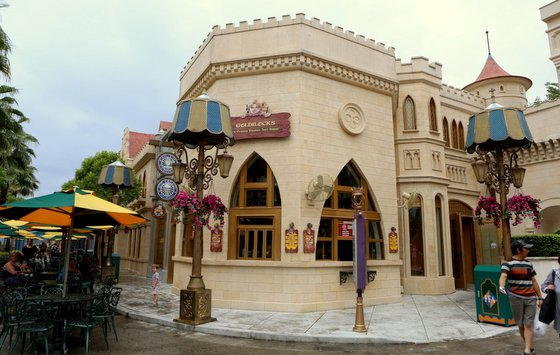If you are almost at the end of your journey and craving some dessert, Goldilocks is the place to go! It offers the iconic Shrek waffle you have probably seen on social media with various Ben & Jerry's ice cream flavours! For more information on its prices, click here.
Fairy Godmother's Potion Shop
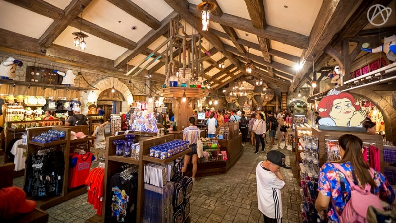Situated at the exit of the 3D attraction, it is retail shop that specifically offers only merchandise from the 'Shrek' franchise! Additionally, don't miss the iconic mini ferris wheel* situated at the end of the store.
*Do note that the ferris wheel will be closed till further notice due to Covid 19 measures.
(Go to Top)
Madagascar
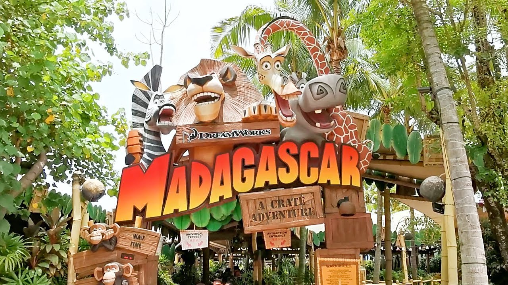
Madagascar's fun-loving zoo animals will be recognizable to both kids and adults who are still young in heart. This zone, which is decorated with lush vegetation, wooden crates, and animal patterns, will take you on a tour of Alex, Melman, Gloria, and Marty's homes - you might even see these characters out and about in real life!
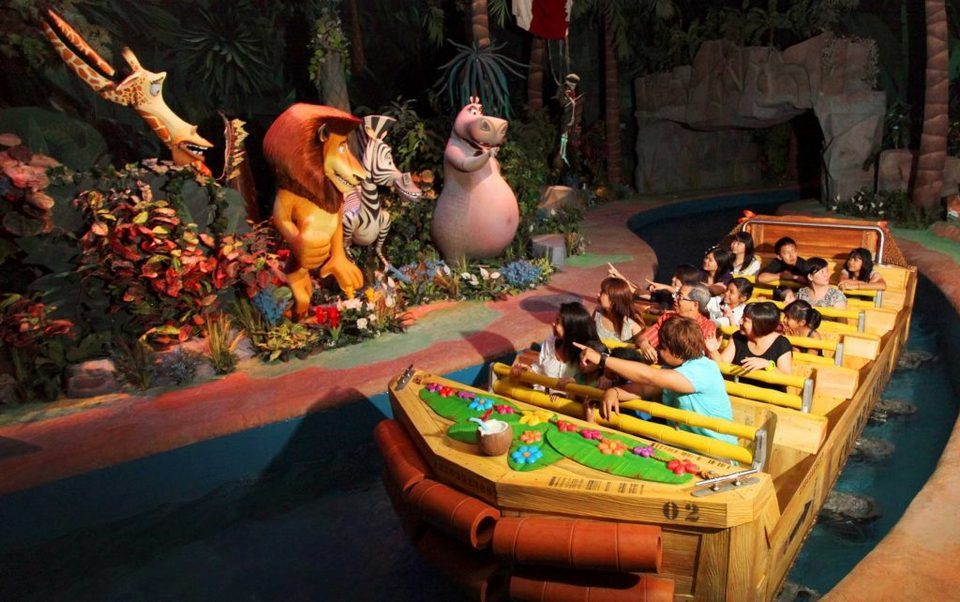
Hop onto the relaxing Madagascar: A Crate Adventure river cruise as the ride brings you along the plot of Madagascar (2005) or go on a fun carousel ride on King Julien’s Beach Party-Go-Round!
Eateries & Retail Shops
Gloria's Snack Shack
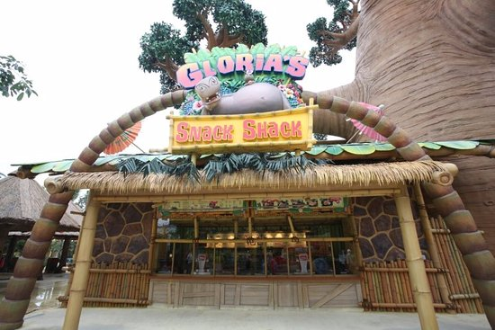Just like Fossil Fuels, Gloria's is a counter-serving restaurant perfect for getting a quick bite! Be sure to find a selection of Japanese delights whereby some options are vegetarian!
(Go to Top)